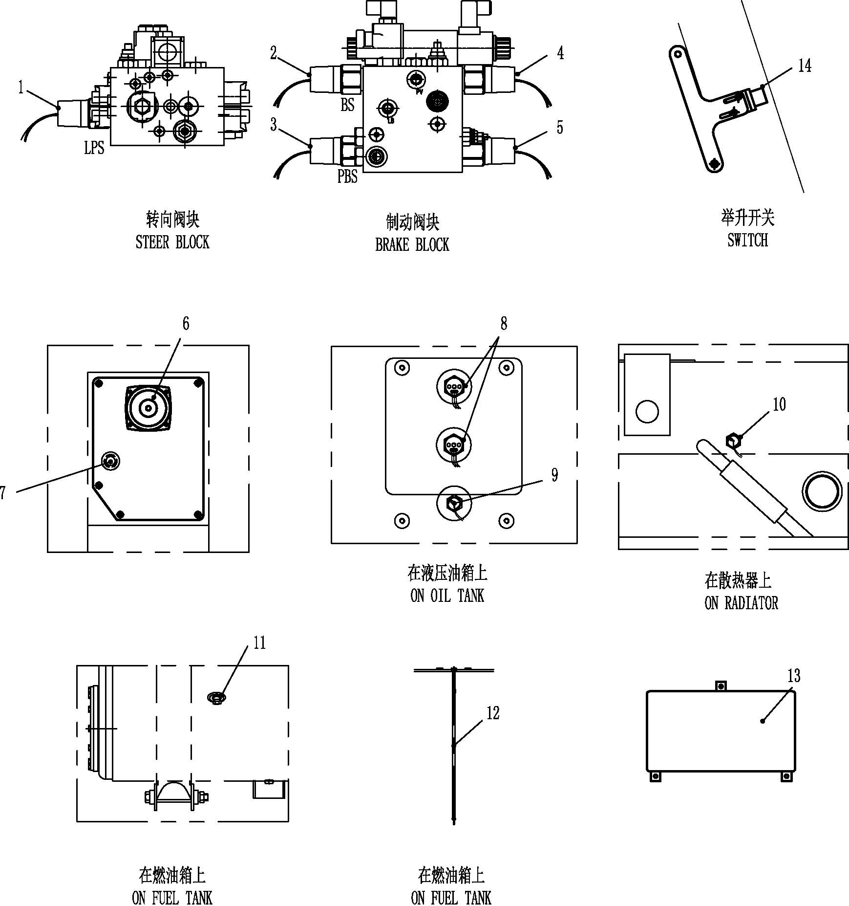

开关和传感器 · SWITCHES AND SENSORS
Электрическая система
Спецификация
1
Переключатель давления
7
Прикуриватель
13
Ручка переключения передач для автобуса
2
Переключатель давления
8
Переключатель температуры
14
Ручка поднятия для автобуса
3
Переключатель давления
9
Переключатель температуры
15
Переключатель ходовых огней
4
Переключатель давления
10
Переключатель уровня
16
Потенциометр ходовых огней
5
Переключатель давления
11
Контроллер
17
Ключевой переключатель
6
Переключатель подъема
12
Модули
Рис. 1
Переключатель и датчик
Описание
Если не указано иное, номера позиций в скобках совпадают с номерами позиций на рис. 1.
В этой рописывается расположения и функции различных переключателей и датчиков, которые управляют всеми основными компонентами и системами машины. Комбинационные приборы на приборной панели передают сигналы оператору.
Примечание: перед запуском машины убедиться, что все сигнальные лампы и органы управления на комбинационных приборах находятся в хорошем рабочем состоянии.
Двигатель
Тахометр (поз. 1, рис. 2) — данные поступают с CAN-шины, тахометр показывает число оборотов коленвала двигателя в минуту (об/мин). Будьте внимательны, частота вращения двигателя не должна превышать 2250 об/мин.
Спидометр (поз. 2 рис. 2) – данные поступают с CAN-шины, указывающие количество километров, пройденных транспортным средством в течение одного часа.
Вольтметр (поз. 3 рис. 3) - показывает текущее напряжение аккумулятора транспортного средства. По этому прибору можно определить, заряжается ли аккумулятор или он разряжен.
Датчик давления масла двигателя (поз. 4, рис. 2)- указывает значение давления масла в двигателе. Нормальный диапазон давления масла составляет 25PSI-65PSI (172Kpa-448KPa).
Спецификация
1
Тахометр
4
Манометр моторного масла двигателя
2
Спидометр
5
Указатель температуры воды в двигателе
3
Вольтметр
6
Топливный манометр
Рис. 2
Указатель температуры воды в двигателе (поз. 5, рис. 2) ----- указывает значение температуры охлаждающей жидкости двигателя. Максимально допустимая температура охлаждающей жидкости двигателя составляет 102 ° C.
Топливный индикатор (поз. 6 рис. 2) - показывает количество топлива в топливном баке. Когда уровень топлива опускается ниже 10%, индикатор низкого уровня топлива загорается. Следует заправить топливо как можно скорее.
Тормозная система
Тормозной переключатель хода света — расположен сзади тормозной педали. При нажатии на педаль переключатель замыкается, замыкая цепь и включая задние стоп-сигналы. Когда педаль освобождается, цепь размыкается, и стоп-сигналы гаснут.
Пусковой переключатель тормоза (поз. 7, рис. 1) — расположен на управляющей башне кабины. При загрузке транспортного средства этот переключатель нажимается, переводя транспортное средство в режим торможения при загрузке. После завершения загрузки переключатель освобождается, и транспортное средство может начать движение.
Выключатель давления (поз. 2&3, рис. 1) — расположен на блоке тормозного клапана. Поз. 2 — это выключатель низкого давления тормозной системы; он отправляет сигнал на предупредительный индикатор, когда давление опускается ниже 2100 psi. Поз. 3 — это выключение давления отпуска стояночного торможения; он отправляет сигнал в приводную систему, когда давление превышает 1500 psi. Транспортное средство начинает движение только после получения этого сигнала приводной системой.
Выключатель давления (поз. 4&5, рис. 1) — расположен на тестовом блоке клапана. Поз. 4 — это выключатель задержки давления переднего тормоза, поз. 5 — выключатель задержки давления заднего тормоза. Через 30 секунд после отпускания тормоза и при условии, что давление в тормозной магистрали выше 35 psi, контроллер включает предупредительный индикатор блокировки переднего или заднего тормоза в кабине.
Рулевое управление
Выключатель давления рулевого управления (поз. 1, рис. 1) — расположен на рулевом многопутном клапане. Когда давление опускается ниже 2100 psi, возникает сигнал и передаётся на предупредительный индикатор.
Поднятие
Переключатель ограниченного положения подъёма кузова (поз. 6, рис. 1) — расположен на опоре платформы с правой задней стороны кабины. Когда кузов поднимается, переключатель ограниченного положения подъёма активируется, отправляя сигнал в приводную систему, которая блокирует задний ход и высокую скорость. Одновременно в кабине загорается индикатор подъёма кузова, указывая на то, что кузов отделен от шасси.
Гидравлическая система
Выключатель по температуре (поз. 8&9, рис. 1) — расположен на гидравлическом баке. Поз. 8 — это выключатель по температуре; когда температура гидравлического масла превышает 80°C, в кабине загорается предупредительный индикатор высокой температуры гидравлического масла. Поз. 9 — это выключатель по температуре; когда температура гидравлического масла превышает 60°C, электромагнитный клапан охладителя масла открывается.
Воздушный фильтр
Сигнальная лампа сопротивления воздушного фильтра ----- когда сигнальная лампа загорается, элемент воздушного фильтра следует заменить.
Контроллер
Контроллер (поз. 11, рис. 1) ----- расположен в левом нижнем углу панели приборов кабины. Логическое управление электрической системой 24В для всего транспортного средства завершается контроллером, и все контроллеры, поддерживающие CAN-шину, подключены параллельно.
Модули (поз. 12 рис.1) ----- расположы в распределительной коробке слева сзади на платформе. Модули являются расширением узла контроллера и подключается к контроллеру через независимую CAN-шину. Управление осуществляется контроллером.
Примечание: при проведении сварки необходимо отключить линии контроллера и модуля; категорически запрещается заряжать и выгружать контроллер и модуль, строго запрещается прикасаться к клеммам контроллера и модуля руками или другими проводниками, все операции, которые могут вызвать чрезмерные перенапряжения из-за сброса нагрузки, строго запрещены.
Примечание: регулярно проверить и убедиться, что диоды, соединенные параллельно со всеми электромагнитными клапанами гидравлической системы всей машины, работают правильно, чтобы избежать сжигания выходных контактов контроллера и модуля, вызванных обратной электродвижущей силой, возникающей при отключении электромагнитного клапан
Электрическая система - переключатели и датчики
030-0190
Электрическая система - переключатели и датчики
030-0190
4
3
Электрическая система - переключатели и датчики
030-0190
1
Электрическая система - переключатели и датчики
030-0190
3
Дополнения - Масса компонентов
200-0090
Дополнения - Масса компонентов
200-0090
4
43
гидровлический бак
блок измерения давления
Блок тормозных клапанов
Блок клапанов управления направлением
Спецификация1Переключатель давления6Переключатель подъема11Переключатель уровня2Переключатель давления7Переключатель тормоза нагрузки12Датчик уровня топлива3Переключатель давления8Переключатель температуры13Контроллер4Переключатель давления9Переключатель уровня14Переключатель подъема5Переключатель давления10Переключатель уровня
Рис. 1
Иллюстрации
